ELE1 · Transformere og trefase: øvelser 7.48–7.58. Videoerne tegnes live i din browser og fylder næsten ingenting.
Ét begreb pr. video, i slidernes rækkefølge.
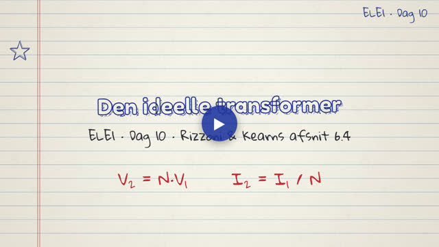
Omsætningsforhold N = n₂/n₁, V₂ = N·V₁, I₂ = I₁/N, effektbevarelse og reflekteret impedans Z₁ = Z₂/N².
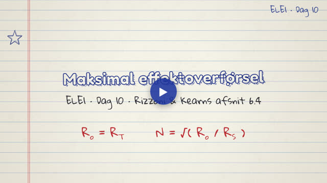
Maksimal effektoverførsel Z_o = Z_T*, kun 50 % virkningsgrad, og transformeren der tilpasser lasten: N = √(R_o/R_S).
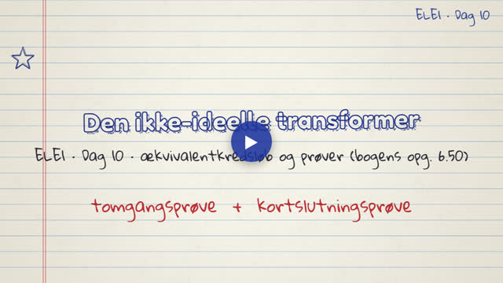
Ækvivalentkredsløbet (r_w, L_w, r_c, L_c) og hvordan tomgangs- og kortslutningsprøven bestemmer det.
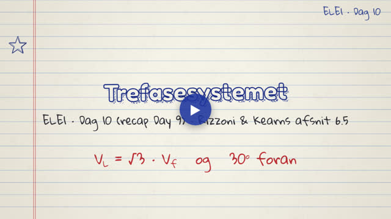
Recap Day 9: hvorfor tre faser, fasespændinger, og udledning af V_L = √3·V_f drejet 30°.
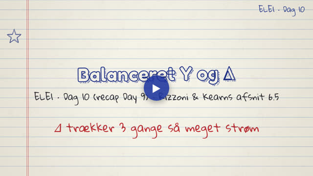
Recap Day 9: balanceret Y og Δ, nullederstrømmen, linje- og fasestrømme, effekt og hvorfor Δ trækker 3 gange så meget strøm.
Eksempler og eksamensopgaver fra kapitlet, trin for trin.
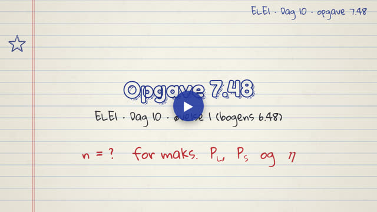
Øvelse 1 (7.48): transformer med fælles 4 Ω. R_in(n) = 7 − 8/n + 12/n²; maks. P_L ved n = 1,31, maks. P_S ved n = 3, maks. η = 82 % ved n = 0,571.
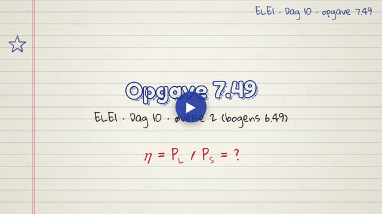
Øvelse 2 (7.49): 70 A ved 90 V gennem 3:1-transformer; blindstrøm i C₂ giver η = 48 %.
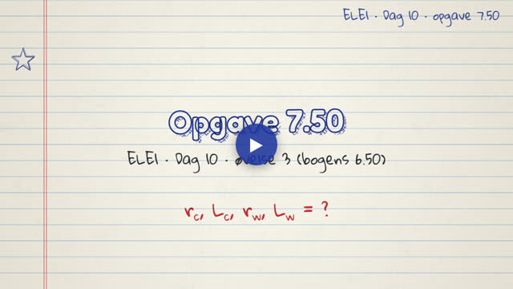
Øvelse 3 (7.50): tomgangs- og kortslutningsprøve giver r_c = 1815 Ω, L_c = 0,68 H, r_w = 0,943 Ω, L_w = 0,35 mH.
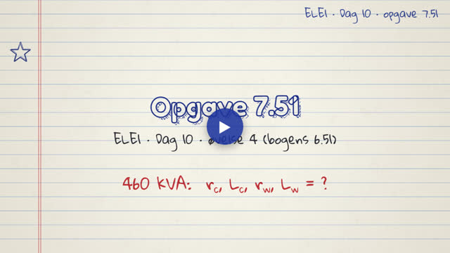
Øvelse 4 (7.51): 460 kVA-transformer; mærkestrøm 100 A, r_c = 105,8 kΩ, L_c = 17,5 H, r_w = 5 mΩ, L_w = 0,14 mH.
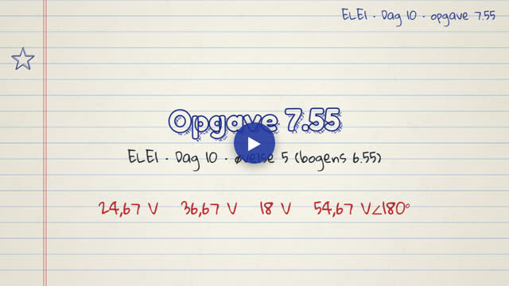
Øvelse 5 (7.55): fire sekundærviklinger kombineret i serie til 24,67, 36,67, 18 og 54,67∠180° V.
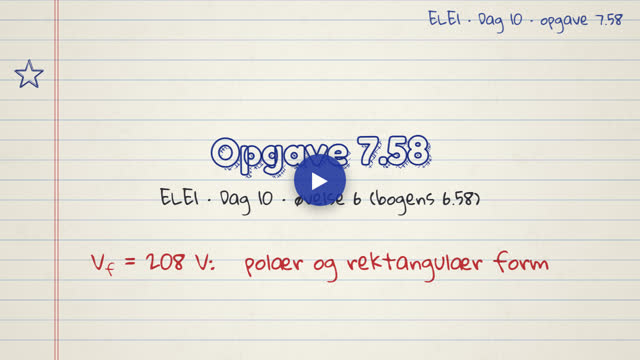
Øvelse 6 (7.58): fase- og linjespændinger for 208 V i polær og rektangulær form.